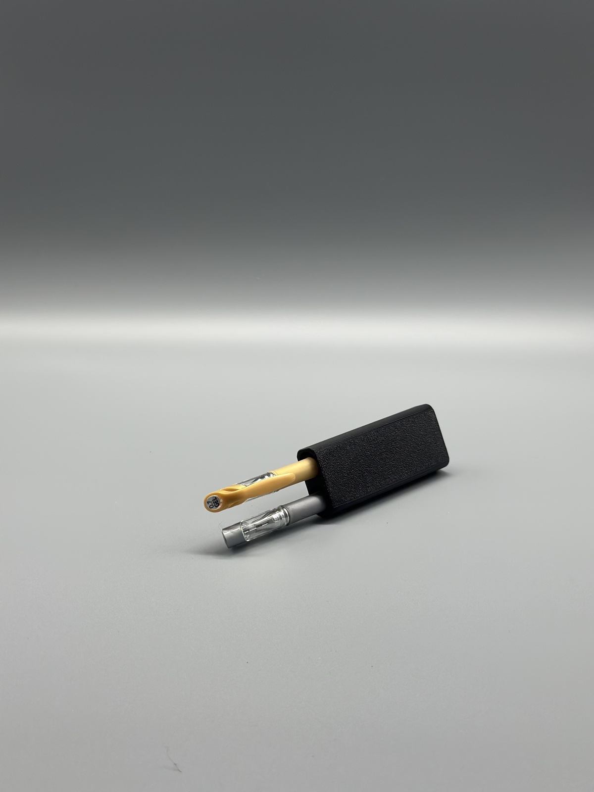

Auto & Fahrrad
Stiftehalter fürs Auto
Ein Stift im Auto ist immer da, nur nie dann, wenn du ihn brauchst. Für den Parkschein, die Notiz an der Windschutzscheibe, die schnelle Nummer aufs Papier. Dieser Halter gibt ihm einen festen Platz, statt ihn zwischen Sitz und Mittelkonsole verschwinden zu lassen.
Gedruckt aus PLA in Mattschwarz. Weitere Farben und Materialien auf Anfrage.
Aktuell nur in Mattschwarz. Weitere Farb- und Materialvarianten auf Anfrage.
1 Stück15,00 €
3 Stück40,50 €
6 Stück73,80 €
Höhere Stückzahl auf Anfrage
Dieses Teil ist noch nicht im Etsy-Shop – bestell es direkt über das Kontaktformular.
Kniff-Tipp Steck den Stift mit der Kappe nach unten rein. So läuft die Mine bei Sommerhitze im Auto nicht aus.
Jetzt anfragenDesign: Catana (MakerWorld), lizenziert unter CC BY 4.0